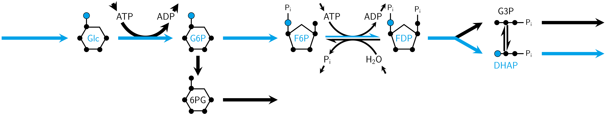

ACHMC (for AEFMs; quickstart)
This section shows how to use the wrapper function in MarkovWeightedEFMs.jl to enumerate and assign AEFMs weights in a simple, multispecies reaction network.

Inputs
using MarkovWeightedEFMs
S = [#
1 -1 0 0 0 0 0 0 0 0 0 0 0 0 0 0 # Glc
0 -1 0 0 0 -1 0 0 0 0 0 0 1 0 0 0 # ATP
0 1 -1 0 -1 0 0 0 0 0 0 0 0 0 0 0 # G6P
0 1 0 0 0 1 0 0 0 0 0 0 0 -1 0 0 # ADP
0 0 1 -1 0 0 0 0 0 0 0 0 0 0 0 0 # 6PG
0 0 0 0 1 -1 1 0 0 0 0 0 0 0 0 0 # F6P
0 0 0 0 0 0 1 0 0 0 0 0 0 0 -1 0 # Pi
0 0 0 0 0 0 -1 0 0 0 0 0 0 0 0 1 # H2O
0 0 0 0 0 1 -1 -1 0 0 0 0 0 0 0 0 # FDP
0 0 0 0 0 0 0 1 -1 1 -1 0 0 0 0 0 # G3P
0 0 0 0 0 0 0 1 1 -1 0 -1 0 0 0 0 # DHAP
]
v = [10, 10, 3, 3, 7, 8, 1, 7, 1, 1, 7, 7, 18, 18, 1, 1]
mets = [#
"Glc",
"ATP",
"G6P",
"ADP",
"6PG",
"F6P",
"Pi",
"H2O",
"FDP",
"G3P",
"DHAP"
]
rxns = [#
"Source Glc",
"Hexokinase",
"G6P dehydrogenase",
"Sink 6PG",
"Phosphoglucose isomerase",
"6-phosphofructo-1-kinase",
"Fructose 1,6-bisphosphatase",
"Fructose-bisphosphate aldolase",
"Triose phosphate isomerase",
"Triose phosphate isomerase",
"Sink G3P",
"Sink DHAP",
"Source ATP",
"Sink ADP",
"Sink Pi",
"Source H2O"
]
smiles = [#
"C([C@@H]1[C@H]([C@@H]([C@H](C(O1)O)O)O)O)O",
"C1=NC(=C2C(=N1)N(C=N2)[C@H]3[C@@H]([C@@H]([C@H](O3)COP(=O)(O)OP(=O)(O)OP(=O)(O)O)O)O)N",
"C([C@@H]1[C@H]([C@@H]([C@H](C(O1)O)O)O)O)OP(=O)(O)O",
"C1=NC(=C2C(=N1)N(C=N2)[C@H]3[C@@H]([C@@H]([C@H](O3)COP(=O)(O)OP(=O)(O)O)O)O)N",
"O=C1O[C@H](COP(=O)(O)O)[C@@H](O)[C@H](O)[C@H]1O",
"C([C@H]([C@H]([C@@H](C(=O)CO)O)O)O)OP(=O)(O)O",
"[O-]P(=O)([O-])[O-]",
"O",
"C(C1C(C(C(O1)(COP(=O)(O)O)O)O)O)OP(=O)(O)O",
"C([C@H](C=O)O)OP(=O)(O)O",
"C(C(=O)COP(=O)(O)O)O"
]
atom = :C # carbon atom type for AEFMsWe can check that the flux vector satisfies the steady state requirements.
all(S * v .== 0) # should evaluate as truetruePre-processing data (wrapper)
The following function pre-processes the input metabolic network for computing the AEFM weights for the specified atom type.
mdl, atom_info, logs = preprocess_all_for_atomic_chmc(S, v, mets, rxns, smiles, atom)The variable mdl is a NamedTuple containing the updated stoichiometry matrix, flux vector, metabolite/reaction names, metabolite SMILES strings, reaction SMILES strings, and mapped reaction SMILES strings.
keys(mdl)(:S, :ms, :rxns, :v, :mets, :rs, :smiles)The variable logs contains details about input metabolic network in addition to listing the pseudometabolites and pseudoreactions dropped from the network based on the input SMILES strings.
keys(logs)(:model_errors, :smiles_warnings)print(logs.model_errors)############################################################
## ERROR CHECKING STOICHIOMETRY MATRIX AND FLUX VECTOR #####
# (1) SUM OF ABSOLUTE FLUX RECONSTRUCTION ERROR:
# 0.0
# PASSED.
# (2) REACTIONS THAT ARE DUPLICATES:
# NONE.
# PASSED.
# (3) REACTIONS WTIH ZERO FLUX:
# NONE.
# PASSED.
# (4) REACTIONS WTIH NEGATIVE FLUX:
# NONE.
# PASSED.
# (5) INTERNAL REACTIONS W/ NON-INTEGER STOICHIOMETRIES:
# NONE.
# PASSED.
# (6) UNIMOLECULAR SOURCE REACTIONS W/ STOICH == 1:
# 1, 13, 16
# PASSED.
# (7) UNIMOLECULAR SOURCE REACTIONS W/ STOICH != 1:
# NONE.
# PASSED.
# (8) MULTIMOLECULAR SOURCE REACTIONS W/ STOICH == 1:
# NONE.
# PASSED.
# (9) MULTIMOLECULAR SOURCE REACTIONS W/ STOICH != 1:
# NONE.
# PASSED.
# (10) UNIMOLECULAR SINK REACTIONS W/ STOICH == 1:
# 4, 11, 12, 14, 15
# PASSED.
# (11) UNIMOLECULAR SINK REACTIONS W/ STOICH != 1:
# NONE.
# PASSED.
# (12) MULTIMOLECULAR SINK REACTIONS W/ STOICH == 1:
# NONE.
# PASSED.
# (13) MULTIMOLECULAR SINK REACTIONS W/ STOICH != 1:
# NONE.
# PASSED.
# (14) REACTIONS W/ NO SUBSTRATES OR PRODUCTS:
# NONE.
# PASSED.
# (15) # METABOLITES PARTICIPATING IN NO REACTIONS:
# NONE.
# PASSED.
# STATUS:
# PASSED. THESE INPUTS SATISFY ATOMIC CHMC REQUIREMENTS.
############################################################logs.smiles_warnings(dropped_rows_pseudometabolites = Int64[], dropped_cols_pseudometabolites = Int64[], dropped_cols_rxnmapper_limit = Int64[])The variable atom_info contains the indices of all source metabolites in the updated network and the number of occurrences for the input atom of interest. It also contains an atom-mapping dictionary relating substrate-atom positions to product-atom positions in each reaction. These are useful for programmatically computing AEFMs across all source metabolite-atom combinations of interest.
keys(atom_info)(:D, :atom, :max_src_met_atoms, :src_mets)atom_info.src_mets # source metabolite indices3-element Vector{Int64}:
1
2
8atom_info.max_src_met_atoms # counts of specified atom in each source metabolite3-element Vector{Int64}:
6
10
0atom_info.D # atom-mapping dictionaryDict{NTuple{4, Int64}, Tuple{Int64, Int64}} with 62 entries:
(3, 2, 1, 3) => (5, 2)
(2, 2, 1, 6) => (4, 2)
(1, 2, 1, 2) => (3, 2)
(2, 5, 1, 2) => (4, 5)
(9, 1, 1, 7) => (6, 2)
(6, 1, 1, 6) => (9, 2)
(9, 1, 1, 8) => (10, 1)
(3, 3, 1, 5) => (6, 2)
(2, 9, 1, 6) => (4, 9)
(3, 4, 1, 5) => (6, 1)
(9, 2, 1, 7) => (6, 1)
(2, 1, 1, 2) => (4, 1)
(6, 2, 1, 6) => (9, 1)
(9, 2, 1, 8) => (10, 2)
(2, 8, 1, 2) => (4, 8)
(3, 6, 1, 3) => (5, 4)
(2, 6, 1, 6) => (4, 6)
(2, 10, 1, 2) => (4, 10)
(1, 6, 1, 2) => (3, 6)
⋮ => ⋮Computing ACHMC for a given metabolite/carbon atom state
The following atomic CHMC is rooted on the first carbon atom of the first source metabolite in the stoichiometry.
I = (atom_info.src_mets[1], 1, atom) # initial state is 1st carbon of canonicalized glucose
res = steady_state_efm_distribution(mdl.S, mdl.v, mdl.ms, I, atom_info.D; verbose = false) # S must be Matrix{Int16}resCHMCAtomicSummary((1, 1, :C), @NamedTuple{EFM::Vector{Int64}, Closures::Vector{Tuple{Int64, Int64}}}[(EFM = [6, 5, 6], Closures = [(6, 5)]), (EFM = [4, 1, 2, 5, 6, 7, 4], Closures = [(8, 1)]), (EFM = [4, 1, 2, 3, 4], Closures = [(4, 1)]), (EFM = [8, 7, 8], Closures = [(9, 7)]), (EFM = [4, 1, 2, 5, 6, 7, 8, 4], Closures = [(10, 1)])], [0.09000000000000001, 0.56, 0.27, 0.01, 0.07], [1.0, 6.222222222222222, 3.0, 0.11111111111111112, 0.7777777777777778], Dict{Int64, Tuple{Int16, Int16}}(5 => (6, 6), 4 => (0, 0), 6 => (9, 4), 7 => (11, 2), 2 => (3, 1), 8 => (10, 1), 3 => (5, 3), 1 => (1, 1)), Dict{Vector{Int16}, @NamedTuple{id::Int64, children::Vector{Int16}}}([1, 2, 5, 6, 7] => (id = 7, children = [8]), [1, 2, 5, 6] => (id = 6, children = [7]), [1, 2, 5, 6, 7, 4] => (id = 8, children = []), [1] => (id = 1, children = [2]), [1, 2, 3] => (id = 3, children = []), [1, 2, 3, 4] => (id = 4, children = []), [1, 2] => (id = 2, children = [3, 5]), [1, 2, 5] => (id = 5, children = [6]), [1, 2, 5, 6, 7, 8] => (id = 9, children = []), [1, 2, 5, 6, 7, 8, 4] => (id = 10, children = [])…), sparse([4, 8, 10, 1, 2, 3, 2, 6, 5, 6, 9, 7, 7, 9], [1, 1, 1, 2, 3, 4, 5, 5, 6, 7, 7, 8, 9, 10], [1.0, 1.0, 1.0, 1.0, 0.3, 1.0, 0.7, 0.125, 1.0, 0.875, 0.125, 0.875, 0.125, 0.875], 10, 10), @NamedTuple{i::Int64, j::Int64, k::Int16}[(i = 1, j = 2, k = 2), (i = 2, j = 3, k = 3), (i = 2, j = 5, k = 5), (i = 3, j = 4, k = 4), (i = 4, j = 1, k = 4), (i = 5, j = 6, k = 6), (i = 6, j = 5, k = 7), (i = 6, j = 7, k = 8), (i = 7, j = 8, k = 12), (i = 8, j = 1, k = 12), (i = 7, j = 9, k = 10), (i = 9, j = 10, k = 11), (i = 10, j = 1, k = 11), (i = 9, j = 7, k = 9)])If we only wanted to enumerate the AEFMs, we would run:
res_enum = enumerate_atomic_efms(mdl.S, mdl.ms, I, atom_info.D, verbose = false)Both functions produce the same output structure res, except that the AEFM flux decomposition fields will be empty. The transition matrix will also default to uniformly distributed probabilities along each row.
Output
The output res is an immutable struct with 8 fields:
res.i is a tuple storing (i) the source metabolite index, (ii) source metabolite atom index (based on canonicalized SMILES string), and (iii) the atom type. This is a copy of the variable I.
res.i(1, 1, :C)res.e is an array of AEFMs with all corresponding simple cycle closures.
res.e5-element Vector{@NamedTuple{EFM::Vector{Int64}, Closures::Vector{Tuple{Int64, Int64}}}}:
(EFM = [6, 5, 6], Closures = [(6, 5)])
(EFM = [4, 1, 2, 5, 6, 7, 4], Closures = [(8, 1)])
(EFM = [4, 1, 2, 3, 4], Closures = [(4, 1)])
(EFM = [8, 7, 8], Closures = [(9, 7)])
(EFM = [4, 1, 2, 5, 6, 7, 8, 4], Closures = [(10, 1)])res.p is an array of AEFM probabilities normalized to one.
res.p5-element Vector{Float64}:
0.09000000000000001
0.56
0.27
0.01
0.07res.w is an array of AEFM weights normalized by the (unimolecular) reaction flux of the source metabolite.
res.w5-element Vector{Float64}:
1.0
6.222222222222222
3.0
0.11111111111111112
0.7777777777777778res.dchmc is a dictionary storing the ACHMC. The keys are the ACHMC states (composed of Markov chain states in res.dmc). The values are the ACHMC state and the Markov chain state children.
res.dchmcDict{Vector{Int16}, @NamedTuple{id::Int64, children::Vector{Int16}}} with 10 entries:
[1, 2, 5, 6, 7] => (id = 7, children = [8])
[1, 2, 5, 6] => (id = 6, children = [7])
[1, 2, 5, 6, 7, 4] => (id = 8, children = [])
[1] => (id = 1, children = [2])
[1, 2, 3] => (id = 3, children = [])
[1, 2, 3, 4] => (id = 4, children = [])
[1, 2] => (id = 2, children = [3, 5])
[1, 2, 5] => (id = 5, children = [6])
[1, 2, 5, 6, 7, 8] => (id = 9, children = [])
[1, 2, 5, 6, 7, 8, 4] => (id = 10, children = [])res.dmc is a dictionary converting Markov chain states to metabolite-atom positions. The value (0, 0) always corresponds to the external environment sink node (which connects back to the source metabolite-atom state).
res.dmcDict{Int64, Tuple{Int16, Int16}} with 8 entries:
5 => (6, 6)
4 => (0, 0)
6 => (9, 4)
7 => (11, 2)
2 => (3, 1)
8 => (10, 1)
3 => (5, 3)
1 => (1, 1)res.T is a sparse array storing the ACHMC transition probability matrix.
res.T10×10 SparseArrays.SparseMatrixCSC{Float64, Int64} with 14 stored entries:
⋅ 1.0 ⋅ ⋅ ⋅ ⋅ ⋅ ⋅ ⋅ ⋅
⋅ ⋅ 0.3 ⋅ 0.7 ⋅ ⋅ ⋅ ⋅ ⋅
⋅ ⋅ ⋅ 1.0 ⋅ ⋅ ⋅ ⋅ ⋅ ⋅
1.0 ⋅ ⋅ ⋅ ⋅ ⋅ ⋅ ⋅ ⋅ ⋅
⋅ ⋅ ⋅ ⋅ ⋅ 1.0 ⋅ ⋅ ⋅ ⋅
⋅ ⋅ ⋅ ⋅ 0.125 ⋅ 0.875 ⋅ ⋅ ⋅
⋅ ⋅ ⋅ ⋅ ⋅ ⋅ ⋅ 0.875 0.125 ⋅
1.0 ⋅ ⋅ ⋅ ⋅ ⋅ ⋅ ⋅ ⋅ ⋅
⋅ ⋅ ⋅ ⋅ ⋅ ⋅ 0.125 ⋅ ⋅ 0.875
1.0 ⋅ ⋅ ⋅ ⋅ ⋅ ⋅ ⋅ ⋅ ⋅ res.R is an array of tuples storing the reaction index/indices mapped to each ACHMC transition matrix element.
res.R14-element Vector{@NamedTuple{i::Int64, j::Int64, k::Int16}}:
(i = 1, j = 2, k = 2)
(i = 2, j = 3, k = 3)
(i = 2, j = 5, k = 5)
(i = 3, j = 4, k = 4)
(i = 4, j = 1, k = 4)
(i = 5, j = 6, k = 6)
(i = 6, j = 5, k = 7)
(i = 6, j = 7, k = 8)
(i = 7, j = 8, k = 12)
(i = 8, j = 1, k = 12)
(i = 7, j = 9, k = 10)
(i = 9, j = 10, k = 11)
(i = 10, j = 1, k = 11)
(i = 9, j = 7, k = 9)Converting AEFM to sequence of metabolites
The corresponding AEFMs correspond to the movement of metabolite/atom states through the reaction network. We can convert these states into metabolites using get_efm_metabolite_atom_indices. Note that there is one fewer metabolite name than AEFM metabolite indices because the pseudometabolite (0, 0) linking sink and source reactions is omitted.
# First AEFM
efm_seq_1 = mets[first.(get_efm_metabolite_atom_indices(res, 1))]efm_seq_13-element Vector{String}:
"FDP"
"F6P"
"FDP"# Second AEFM
efm_seq_2 = mets[first.(get_efm_metabolite_atom_indices(res, 2))]efm_seq_25-element Vector{String}:
"Glc"
"G6P"
"F6P"
"FDP"
"DHAP"Visualizing the CHMC and mapped reactions
The following plotting function visualizes the ACHMC rooted on state I. This is only recommended for exploring ACHMCs of small networks.
using GLMakie # Makie backend
GLMakie.activate!()
plot_atomic_chmc(res, S, mets, rs)Each node in the main panel corresponds to a CHMC state (metabolite and atomic index).

Clicking on a CHMC transition will highlight that transition and display the corresponding metabolic reaction on the upper panel. The pair of purple highlighted atoms correspond to the movement of the same atom from the LHS to RHS of the reaction.

Finally, the reaction and mapped reaction SMILES strings can also be plotted as an SVG and previewed using a package like ElectronDisplay. If fname != "", the SVG is also saved to file. By default, fname == "" and the SVG is not saved. The default canvas width and height are 1420 by 580 (pixels) but these can be changed. If using ElectronDisplay and the image is cut off, try resizing the plotting window or reducing the canvas dimensions.
using ElectronDisplay
# Reaction string
plot_mapped_reaction(rs[2], view=true, canvas_width = 1420, canvas_height = 580)
#plot_mapped_reaction(rs[2], "\path\to\save\name.svg", view=true)
# Mapped reaction string
plot_mapped_reaction(ms[2], view = true, canvas_width = 1420, canvas_height = 580)
#plot_mapped_reaction(ms[2], "\path\to\save\name.svg", view = true)